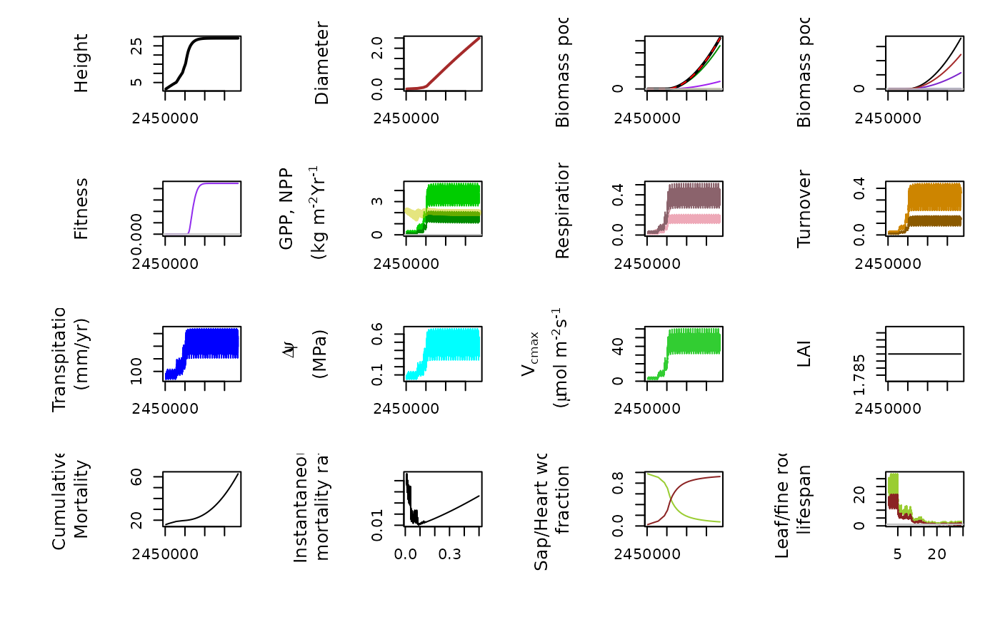

TreeLife demo
Jaideep Joshi
2023-01-21
lho_demo.Rmd## ── Attaching core tidyverse packages ──────────────────────── tidyverse 2.0.0 ──
## ✔ dplyr 1.1.2 ✔ readr 2.1.4
## ✔ forcats 1.0.0 ✔ stringr 1.5.0
## ✔ ggplot2 3.4.3 ✔ tibble 3.2.1
## ✔ lubridate 1.9.2 ✔ tidyr 1.3.0
## ✔ purrr 1.0.2
## ── Conflicts ────────────────────────────────────────── tidyverse_conflicts() ──
## ✖ dplyr::filter() masks stats::filter()
## ✖ dplyr::lag() masks stats::lag()
## ℹ Use the conflicted package (<http://conflicted.r-lib.org/>) to force all conflicts to become errors## [1] "/home/jjoshi/codes/Plant-FATE"Introduction
This vignette demonstrates the functionalities of the
PlantFATE package for simulating plant growth and
calculating fitness based on specified traits. We will walk through the
code, explaining each step and providing visualizations of the simulated
plant’s growth trajectory.
A plotting utility
The plot_plant_trajectory function is defined to visualize various aspects of plant growth over time. It generates multiple plots showing different parameters such as height, diameter, biomass pools, fitness, GPP (Gross Primary Productivity), NPP (Net Primary Productivity), respiration, turnover, transpiration, water potential, Vcmax (maximum carboxylation velocity), LAI (Leaf Area Index), mortality rates, sapwood/heartwood fractions, leaf/fine root lifespans, etc.
Simulate a plant and plot its growth trajectory
The code first initializes parameters and environmental conditions for simulating plant growth using the LifeHistoryOptimizer class from the PlantFATE package.
- It reads in environmental data and initializes CO2 levels.
- Then, it iterates over time steps, simulating plant growth and storing the state of the plant at each time step.
- Finally, it plots the trajectory of the simulated plant’s growth using the previously defined plot_plant_trajectory function.
params_file = "tests/params/p_test_v2.ini"
lho = new(LifeHistoryOptimizer, params_file)
lho$set_i_metFile("tests/data/MetData_AmzFACE_Monthly_2000_2015_PlantFATE_new.csv")
lho$set_a_metFile("tests/data/MetData_AmzFACE_Monthly_2000_2015_PlantFATE_new.csv")
lho$set_co2File("")
lho$init_co2(414)
print(c(lho$env$clim_inst$co2,
lho$env$clim_acclim$co2))## [1] 414 414
lho$init()
lho$printMeta()
dt = 0.1
df = read.csv(text="", col.names = lho$get_header())
for (t in seq(2000,2500,dt)){
lho$grow_for_dt(t,0.1)
df[nrow(df)+1,] = lho$get_state(t+dt)
}
plot_plant_trajectory(df)
Calculate fitness of specified traits
Two sections are dedicated to calculating the fitness of a tree with specified traits. The first section calculates fitness without modifying any traits, while the second section overrides the wood density trait to a specified value and recalculates fitness. The process involves initializing the optimizer, setting traits, and then calculating fitness based on those traits.
To calculate the fitness of a tree with given traits, follow these steps:
- Create an optimizer
- set the parameters file
- Initialize the optimizer - this will read the params file and initialize everything from it
- set traits - this will overwrite the specified traits and redo any trait-coordination calculations
- Calculate fitness
lho = new(LifeHistoryOptimizer, params_file)
lho$init()
lho$printMeta()
lho$calcFitness()## [1] 0.01928136
lho = new(LifeHistoryOptimizer, params_file)
lho$traits0$wood_density = 750
lho$init()
lho$printMeta()
lho$calcFitness()## [1] 0.01766476Calculate fitness as a function of wood density
This section calculates fitness as a function of wood density under different environmental conditions. - It defines a function fitness_wd to calculate fitness based on wood density, environmental parameters, and CO2 levels. - It iterates over a range of wood densities and calculates fitness for each density under ambient and elevated CO2 conditions. - Finally, it plots the results, showing how fitness varies with wood density under different environmental scenarios.
# Ambient Env
zp_amb = c(19.22669, 15.71661, 3.15710, 0.00000)
co_amb = c(1.0000000, 0.4712540, 0.2218492, 0.0711068)
# eCO2 env
zp_ele = c(20.695389, 18.106550, 14.087510, 2.206985, 0.000000)
co_ele = c(1.000000, 4.712543e-01, 2.220795e-01, 1.032055e-01, 2.763073e-02)
fitness_wd = function(wd, zp, co, co2, pfile="tests/params/p_test_v2.ini"){
lho = new(LifeHistoryOptimizer, pfile)
lho$set_i_metFile("tests/data/MetData_AmzFACE_Monthly_2000_2015_PlantFATE_new.csv")
lho$set_a_metFile("tests/data/MetData_AmzFACE_Monthly_2000_2015_PlantFATE_new.csv")
lho$init_co2(co2)
lho$env$z_star = zp
lho$env$canopy_openness = co
lho$traits0$wood_density = wd
lho$init()
# lho$printPlant()
lho$calcFitness()
}
wd = seq(350, 900, length.out=20)
dat_amb = wd %>% purrr::map_dbl(.f = fitness_wd, zp=zp_amb, co=co_amb, co2=368)
dat_ele_base = wd %>% purrr::map_dbl(fitness_wd, zp=zp_amb, co=co_amb, co2=614)
dat_ele = wd %>% purrr::map_dbl(fitness_wd, zp=zp_ele, co=co_ele, co2=614)
# dat_amb_nlimit = wd %>% purrr::map_dbl(fitness_wd, zp=zp_amb, co=co_amb, co2=368, pfile="tests/params/p_ele_hi.ini")
matplot(y=cbind(dat_amb/max(dat_amb), dat_ele_base/max(dat_ele_base), dat_ele/max(dat_ele)), x = wd, type="l", lty=1, col=c("black", "grey", "yellow3", "brown"), ylab="Fitness", xlab="Wood density", cex.lab=1.3, lwd=2)